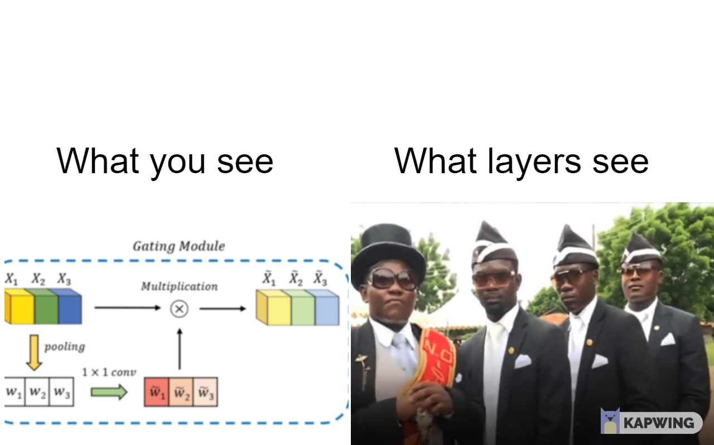

Joseph Faye
mar. 18 2021
Zoom
ResNet [2], Highway networks [3] to DenseNet [4], adding more inter-layer connections besides the direct connection in adjacent layers, emerged as popular approaches to strengthen feature propagation among different layers. However, dense connections cause much redundancy especially in the case of DenseNet. Another aspect is that for many dense connections from previous layers, the role played by the mainstream module is unclear. To address these issues, authors introduce a gating mechanism, inspired by SENeT [5] to model the layer relationships in densely connected blocks.
[3] Rupesh Kumar Srivastava and Klaus Greff and Jürgen Schmidhuber. 2015. Highway Networks.